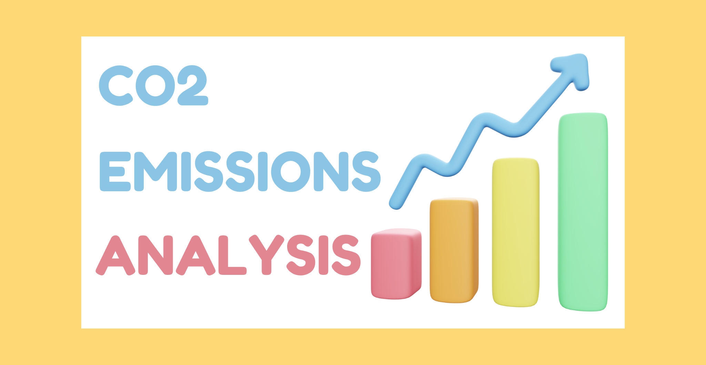

R Projects
I leverage R to analyze complex datasets, employing advanced statistical techniques and data manipulation methods to uncover insights. My projects focus on creating dynamic visualizations and utilizing predictive analytics to inform decision-making. I am passionate about transforming raw data into clear, actionable insights that drive strategic outcomes and enhance understanding.
R Projects

CO2 Emissions Analysis
This project analyzes CO2 emissions data from various countries over time. Using R, I employed the dplyr library for data manipulation, grouped data by country and year, and calculated summary statistics. Through ggplot2, I created static and animated visualizations to illustrate global emissions trends. This analysis deepened my understanding of data visualization and provided insights into the dynamics of CO2 emissions. Click here to view.
R & GIS: language and migration
I explore the intersection of GIS and R to uncover insights from analyzing language proficiency and economic activity across various regions, leveraging spatial data to visualize trends and patterns. Through projects such as spatial analyses, interactive dashboards, and cluster analyses, I aim to provide actionable insights that inform decision-making and policy development. Join me on this journey as I transform data into clear narratives that drive understanding and impact.Click here to view.